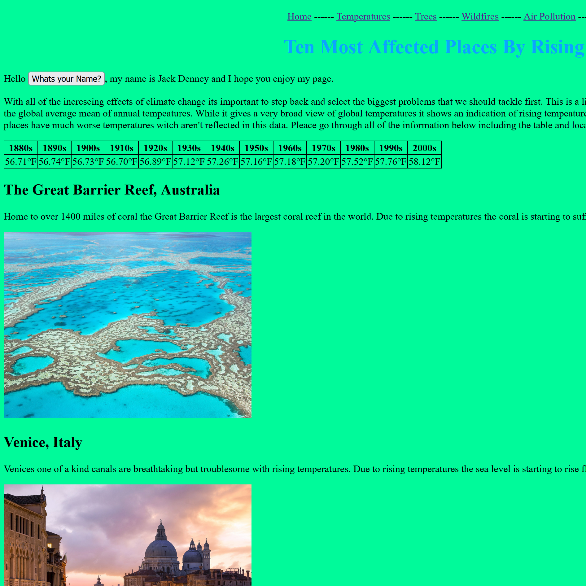

Before and After
LUC - Before
What do you know? This was my first Web Design 2 Project. The details are pretty simple.

LUC -After
This was a mini HW project where I redesigned my rowing boathouse website. This was my first real exposure to responsive stuff.

World Strides - Before
This was my first group project for Web 1. This was a look into enviroment and tested our ability to work together on a web page.

World Strides - Before
This was my first web class final submission. Please ignore my face... This was my first big exploration into html (in the 8th grade).